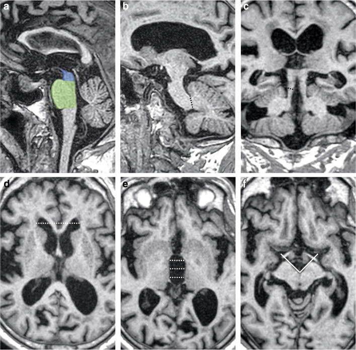

aSagittale mediana — area del mesencefalo (blu) e area del ponte (verde), separate dalla linea che passa per l'incisura pontina superiore e il margine inferiore della lamina quadrigemina
bParasagittale — spessore del peduncolo cerebellare medio (MCP)
cCoronale obliqua tangente al pavimento del IV ventricolo — spessore del peduncolo cerebellare superiore (SCP)
dAssiale alla massima dilatazione — distanza fra i corni frontali, larghezza destra-sinistra maggiore
eAssiale al livello delle commissure anteriore e posteriore — larghezza del III ventricolo, media di tre misure della massima distanza fra i margini laterali
fAssiale — angolo interpeduncolare (IPA), formato dalla metà posteriore dei peduncoli cerebrali a livello dei corpi mammillari o subito al di sotto
MRPI = (area ponte / area mesencefalo) × (MCP / SCP)
MRPI 2.0 = MRPI × (III ventricolo / corni frontali)
Figura 1 da Ugga L, Cuocolo R, Cocozza S et al.,
Magnetic resonance parkinsonism indices and interpeduncular
angle in idiopathic normal pressure hydrocephalus and progressive supranuclear palsy,
Neuroradiology 2020;62(12):1657–1665, doi:10.1007/s00234-020-02500-1.
Riprodotta senza modifiche in quanto pubblicata Open Access con licenza
Creative Commons Attribution 4.0 International (CC BY 4.0).
Le immagini si riferiscono a un paziente con idrocefalo normoteso.